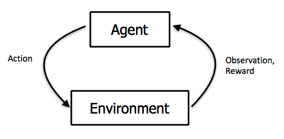

Brief Introduction to Reinforcement and Semi-supervised Learning
Toptal
Toptal suggests new candidates to write a blog post on a topic related to their skill set if they want to join Toptal network. This blog post is for the same. This post extends this toptal blog post on machine learning basics.
The aforementioned blog post discusses two types of machine learning tasks, supervised and unsupervised machine learning, with informative figures and examples. However, it does not discuss other types of machine learning tasks which are very popular research topics. This post attempts to briefly explain reinforcement learning and semi-supervised learning by using supervised learning as a reference.
Reinforcement Learning
Reinforcement learning is perhaps the most popular and exciting research field. RL methods aim to train an agent (think of ML model) using trial and error method. An agent learns to take optimal actions in an environment while environment rewards the agent based on its actions. An agent will receive good (i.e positive) reward if it performs well and bad if not. We can also think of rewards as a kind of loss function we use in supervised learning.
You must have heard of news headlines such as "AI Beating GO Champion". The technology behind such AI system is RL. You might also have heard people especially researchers saying that RL is the true AI. Why is that? If we want to build truly AI systems then these systems must be able to learn by themselves, which is not the case in supervised learning since we have a supervisor to guide the model or agent. But in reinforcement learning, we don't have such supervisor rather an agent learns to take optimal actions by itself. Let's see how does it do that.
An RL system is consists of an agent (AI model), set of possible actions that this agent can take in a given environment, and of course an environment in which an agent will take actions. Consider the example of chess, here, we have one player as an agent, the chess board is an environment, and a set of possible actions are valid moves for each piece. In supervised learning, our system learns by using guidance from the supervisor. That is, it makes predictions (i.e classification of an object/image) and receives guidance through supervisor (i.e loss function) on how to make changes (i.e update weights) to make better predictions. After doing this several times (i.e epochs), our system can make good predictions. However, in reinforcement learning, we don't have such supervisor and that's one of the reasons it is called true AI. In RL, however, we have rewards. Consider our example of chess again, if an agent (player) makes a good move (i.e taking opponent's queen without losing any piece) then our environment will give it a positive reward and vice versa. Here, our goal is to maximize the cumulative reward for this agent.
We can also think of RL as a trial and error method, where an agent takes an action receives signal suggesting whether that action was good or not from an environment and based on that signal it improves over time. This is an iterative process. If you are excited about RL and the impact it can make then you should explore RL methods. One popular RL algorithm is a Deep Q Learning.
Semi-supervised Learning
Semi-supervised learning lies at the intersection of supervised and unsupervised learning. For most supervised learning methods, more data means better results. However, getting more labeled data is not only expensive but also complicated task. But we usually have a lot of unlabelled data. Semi-supervised learning comes to rescue here. Semi-supervised learning leverages both labeled and unlabeled data to train a model. Semi-supervised learning doesn't only eliminates the need of labeled data but also reduces human biases that labeled data impose on a model. Next, we'll see how semi-supervised methods work in brief.
As I said before, semi-supervised learning is a combination of supervised and unsupervised learning. First, we do a supervised learning and then unsupervised learning. Let us take an example of image classification. Suppose, we have 10000 labeled data images and 30000 unlabeled images. By the way, this is what usually happens, we have more unlabeled data than labeled data. Semi-supervised learning allows us to leverage this unlabeled data. First of all, we train a model using labeled data. This helps model understand the types of images present in the data. Then we train a model on unlabeled data to define boundaries of image types so that it can classify given input image.
There is lot of exciting research is happening in this field. You may want to learn more about semi-supervised learning. Happy Learning!